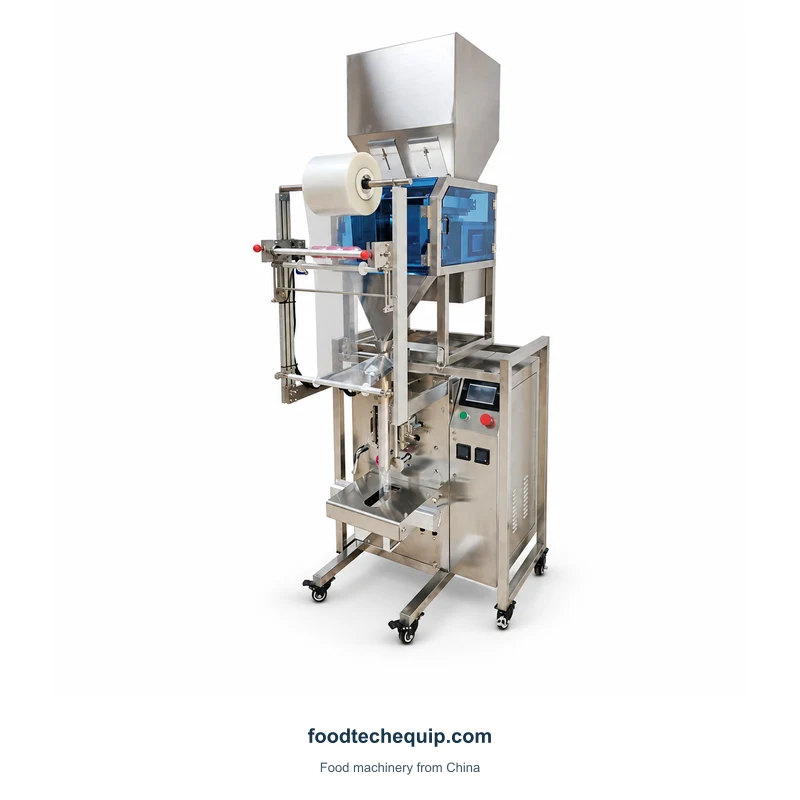
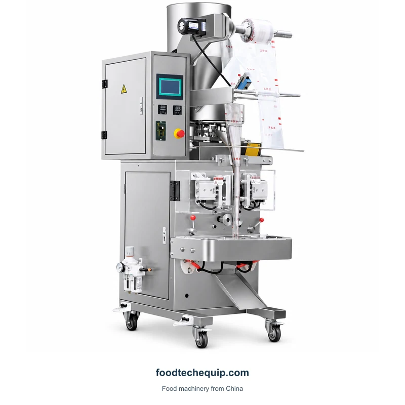
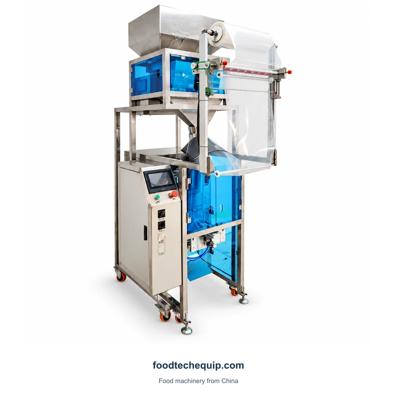
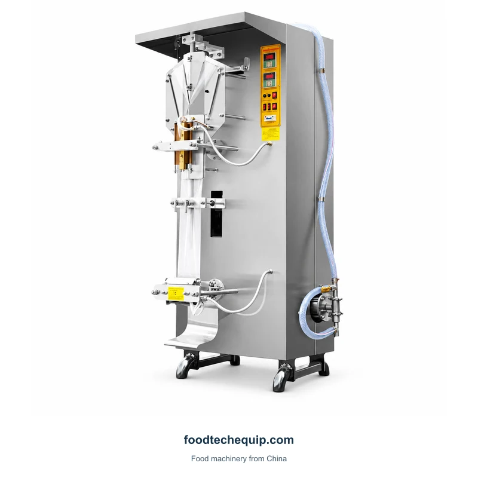

การบรรจุซองขนาดเล็ก
เครื่องบรรจุเม็ดลงซอง
อุปกรณ์บรรจุภัณฑ์ซองแนวตั้งสําหรับเม็ดที่มีการให้อาหารถังการจัดการฟิล์มและส่วนบรรจุภัณฑ์ที่ปิดสนิท
ดูอุปกรณ์
เลือกภาพเพื่อดูขนาดใหญ่
อุปกรณ์เม็ดแนวตั้งที่มีฟีดด้านบนการจัดการฟิล์มและการควบคุมด้านหน้า
การเลือกอุปกรณ์·คําแนะนําการติดตั้ง·การสนับสนุนระยะไกล
สํารวจข้อมูลผลิตภัณฑ์ ↓ให้น้ําหนักแพ็คที่ต้องการและการวาดภาพซองสําหรับการกําหนดค่า 320 เปรียบเทียบกําลังการผลิตที่ต้องการในรูปแบบแพ็คมากกว่าอัตราการถ่ายโอนจากเครื่องซองอื่น
กําหนดแอปพลิเคชันการเติมหรือการจ่ายแบบมิเตอร์ ↗| พารามิเตอร์ | ความคุ้มค่า | หน่วย | การปรับแต่ง |
|---|---|---|---|
| ความเร็วในการบรรจุ | 30-65 | ถุง/นาที | 320 |
งานซองรวมถึงชุดรับและการเตรียมส่วน หากคุณต้องการปริมาณที่วัดได้สําหรับขั้นตอนบรรจุภัณฑ์ที่มีอยู่ให้เปรียบเทียบการแยกแบบมิเตอร์ อธิบายแพ็คสําเร็จรูปและการดําเนินการที่ใบเสนอราคาควรจะรวมถึง

อุปกรณ์บรรจุภัณฑ์ซองแนวตั้งสําหรับเม็ดที่มีการให้อาหารถังการจัดการฟิล์มและส่วนบรรจุภัณฑ์ที่ปิดสนิท
ดูอุปกรณ์
อุปกรณ์บรรจุภัณฑ์เม็ดแนวตั้งที่มีการให้อาหารถังกรอบการจัดการฟิล์มและส่วนการทํางานที่ปิดสนิท
ดูอุปกรณ์
อุปกรณ์ชุดของเหลวแนวตั้งที่มีส่วนการขึ้นรูปการเชื่อมต่อฟีดและการควบคุม
ดูอุปกรณ์